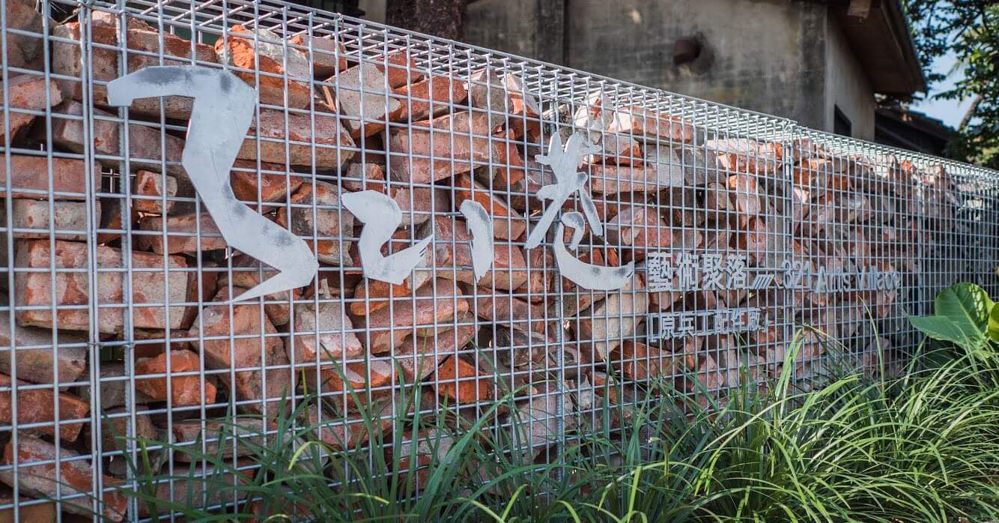

321巷藝術聚落
簡介
- 位置：704 臺南市台南市北區公園路321巷
- 歷史定位：2003年5月13日公告為市定古蹟：原日軍步兵第二聯隊官舍群。曾為成大教授宿舍，其一為台灣知名美術家郭柏川故居。2013年3月23日，正式成立「321巷藝術聚落。
- 網站： Facebook
- 開放時間：本聚落自 2020年7月1日 啟封園整修，暫不開放。

321巷藝術聚落
321巷藝術聚落
Insert jumbotron description here